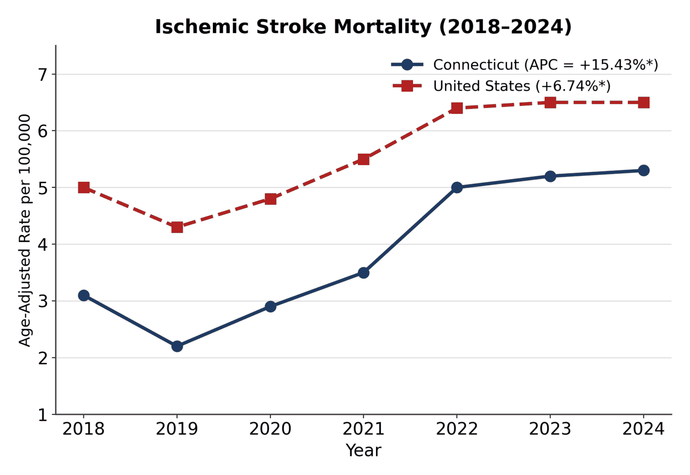
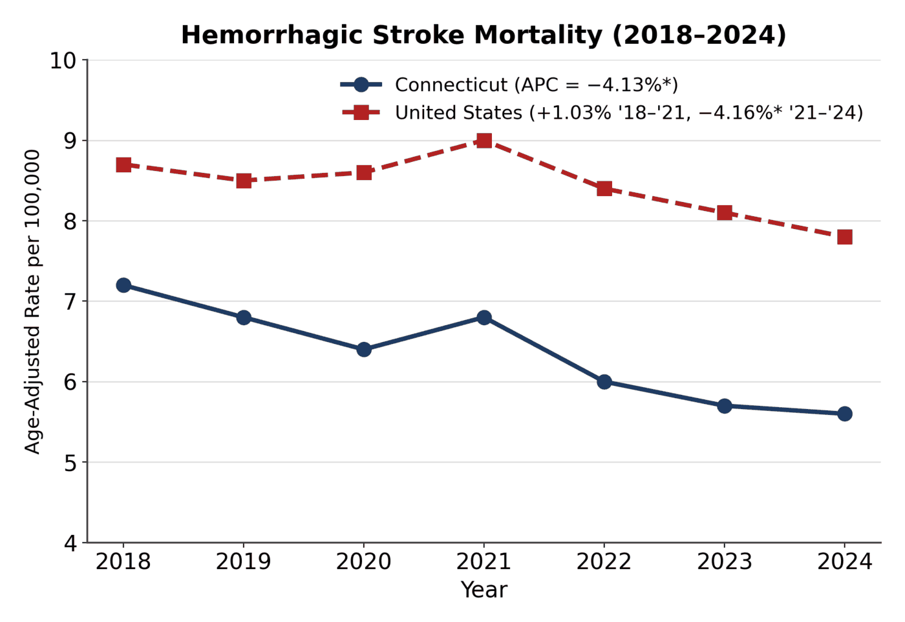
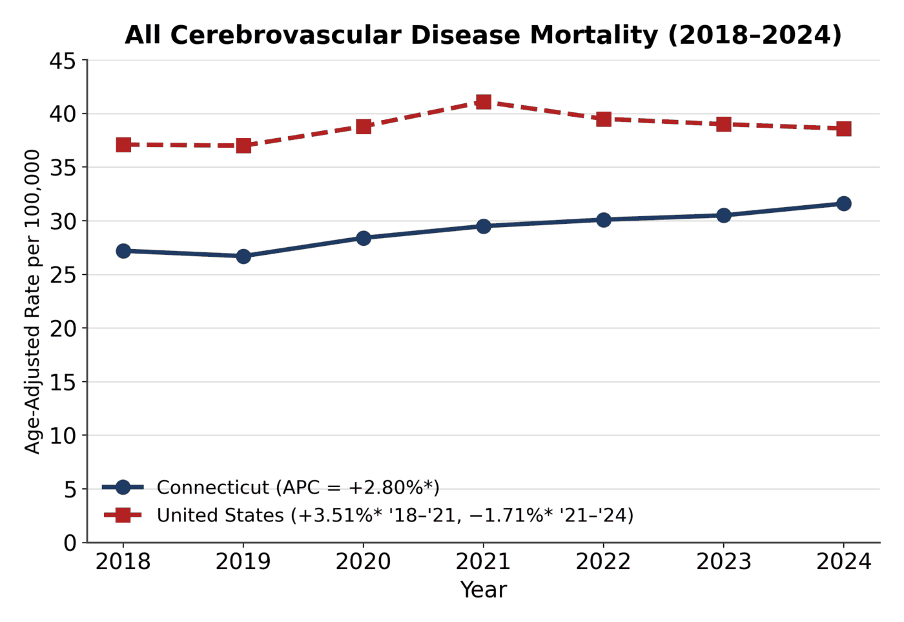

The question
Is stroke mortality in Connecticut following the national trend, and if it isn't, which type of stroke is responsible? Ischemic and hemorrhagic strokes have different causes and different prevention levers, so an all-stroke rate can hide what's actually moving.
What I did
This was my independent project for the summer session, with guidance from CTDPH epidemiologist Stephanie Poulin.
- Pulled deaths for Connecticut and the U.S., 2018–2024, from the CDC WONDER Underlying Cause of Death database, using ICD-10 I60–I69 (all cerebrovascular), I63 (ischemic), and I60–I62 (hemorrhagic).
- Used age-adjusted mortality rates per 100,000, standardized to the 2000 U.S. standard population, so a state and the nation could be compared fairly.
- Fit Joinpoint regression (NCI Joinpoint Regression Program v6.0.1) to estimate the annual percent change (APC) and test whether the trend changed direction, with significance at α = 0.05.
- Wrote up the findings and three recommendations as a poster and presented it to CTDPH staff and leadership on my last day.
What the data showed

Connecticut's ischemic stroke death rate rose 15.4% per year from 2018 to 2024, more than double the national rise of 6.7% per year.


- Ischemic stroke is the driver. Hemorrhagic stroke mortality fell at about the same pace in Connecticut and the U.S., so it can't explain Connecticut's rise.
- No turning point in Connecticut. The national all-stroke trend reversed after 2021. Connecticut's kept climbing with no significant inflection.
- Level versus direction. Connecticut's age-adjusted rates stayed below the national rates in every year. The concern is how fast the ischemic rate is rising, not where it sits today.
Recommendations I presented
- Strengthen primary prevention for ischemic stroke risk factors (hypertension, atrial fibrillation, diabetes, smoking) through targeted screening and management in high-burden communities.
- Evaluate access to acute ischemic stroke care across the state, including door-to-needle and door-to-thrombectomy times against AHA/ASA guideline benchmarks.
- Expand town- and county-level surveillance of ischemic stroke deaths to find the places driving the state trend.
Limitations
- The ischemic and hemorrhagic codes cover only part of all stroke deaths. The rest fall under less specific ICD-10 codes that I didn't analyze separately.
- U.S. comparison values came from Joinpoint trend output; Connecticut values came straight from CDC WONDER.
- 2020–2021 may reflect reporting disruptions during COVID-19.
- Ischemic rates are small in absolute terms (single digits per 100,000), so a large percent change reflects a modest number of deaths. This is descriptive trend work, not a causal analysis.